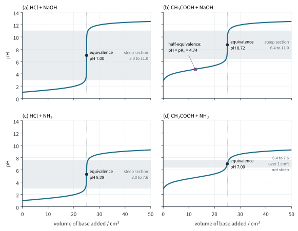
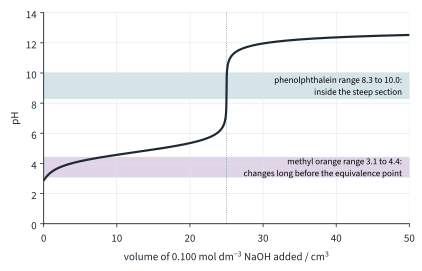
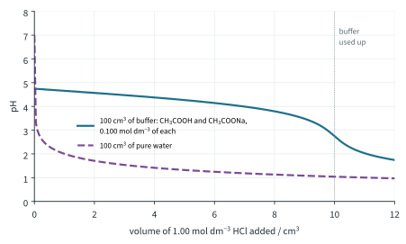
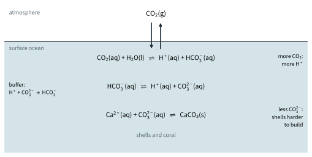

Chemistry of Aqueous Solutions 2
Topic 10 · Chemistry of Aqueous Solutions Part 2
On this page
Part 1 worked out the pH of a single acid or base. In a titration, one is added to the other a little at a time, so the pH keeps changing. This Part follows those changes, uses them to choose an indicator, and then looks at the mixtures that resist changes in pH: buffer solutions, including the one that keeps the oceans at about pH 8.
pH titration curves
If a pH meter is placed in the conical flask during a titration, and the pH is recorded after each addition from the burette, a graph of pH against volume added is a titration curve. (Titration technique and the calculations of concentration are in Topic 6 Part 2.) Fig 1 shows the four combinations of strong and weak acid and base. Each time, 25.0 cm3 of 0.100 mol dm−3 acid is in the flask and 0.100 mol dm−3 base is added from the burette, so the equivalence point, where the acid and base have exactly reacted, is at 25.0 cm3 in all four.

Every curve has the same parts:
- a starting pH: the pH of the acid alone (Part 1);
- a slow rise while the acid is in excess;
- a steep section around the equivalence point, where a drop or two of base changes the pH by several units;
- a slow rise towards the pH of the base alone, once the base is in excess.
What differs is where the curve starts, where the equivalence point lies, and how tall the steep section is. All of these depend on the strengths of the acid and the base, not on how much base is needed: 25.0 cm3 is needed in every case, because a weak acid still gives up all its protons as the base removes them (Part 1).
(a) Strong acid and strong base: HCl and NaOH
- Starts at pH 1.00, the pH of 0.100 mol dm−3 HCl.
- Rises slowly. After 20.0 cm3, 0.000500 mol of H+ is left in 45.0 cm3, so [H+] = 0.000500 / 0.0450 = 0.0111 mol dm−3 and the pH is still only 1.95.
- The last few drops before 25.0 cm3 remove almost all the H+, and the first few after it give excess OH−: the pH leaps from about 3 to about 11.
- The equivalence point is at pH 7.00. The solution contains only NaCl(aq), and neither Na+ nor Cl− reacts with water.
- Then levels off towards 13: at 50.0 cm3, [OH−] = 0.00250 / 0.0750 = 0.0333 mol dm−3, pH 12.52.
(b) Weak acid and strong base: CH3COOH and NaOH
- Starts higher, at pH 2.87 (Part 1, worked example 3), because the weak acid is only partly dissociated.
- A quick rise, then a long, gently sloping region. Here the flask contains both CH3COOH and CH3COO−: it is a buffer (later in this Part), so the pH changes only slowly.
- At half-equivalence (12.5 cm3), half the acid has become CH3COO−, so [CH3COOH] = [CH3COO−] and Ka = [H+][CH3COO−] / [CH3COOH] = [H+]. So pH = pKa = 4.74 at half-equivalence. This is how pKa is measured.
- The steep section is shorter, from about 6.4 to 11.0, and the equivalence point is at pH 8.72, above 7 (worked example 1).
- After equivalence the curve is the same as (a): excess OH− from a strong base.
(c) Strong acid and weak base: HCl and NH3
- The first part is the same as (a), because the strong acid controls the pH while it is in excess.
- The steep section runs from about 3.0 to 7.6, and the equivalence point is at pH 5.28, below 7 (worked example 1).
- After equivalence the pH levels off at only about 9: the flask now holds excess NH3 with NH4+, another buffer, and NH3 is a weak base anyway.
(d) Weak acid and weak base: CH3COOH and NH3
- The pH rises gradually all the way: there is no steep section, only a change from about 6.4 to 7.6 across the whole 24.5 to 25.5 cm3.
- The equivalence point here happens to be at pH 7.00, only because Ka(CH3COOH) and Kb(NH3) are equal. No indicator can show it sharply (below).
Why the equivalence point is not always at pH 7
At the equivalence point the flask contains just a salt solution. Whether it is neutral depends on whether the ions of the salt react with water.
- Ethanoate ion (from the weak acid) is a weak base (Part 1: Kb = 5.56 × 10−10 mol dm−3). It takes protons from water and makes the solution alkaline:
CH3COO−(aq) + H2O(l) ⇌ CH3COOH(aq) + OH−(aq)
- Ammonium ion (from the weak base) is a weak acid (Ka = 5.56 × 10−10 mol dm−3) and makes the solution acidic:
NH4+(aq) ⇌ NH3(aq) + H+(aq)
- Na+ and Cl− come from a strong base and a strong acid; they do not react with water, so NaCl(aq) is neutral.
Worked example 1: pH at the equivalence point
Calculate the pH at the equivalence point when 25.0 cm3 of 0.100 mol dm−3 ethanoic acid is titrated with 0.100 mol dm−3 sodium hydroxide. Ka(CH3COOH) = 1.8 × 10−5 mol dm−3.
(To answer this, treat the equivalence mixture as a solution of the weak base CH3COO−, and use [OH−] = √(Kb c) from Part 1.)
n(CH3COO−) = 0.100 × (25.0 / 1000) = 0.00250 mol, in a total volume of 50.0 cm3
[CH3COO−] = 0.00250 / (50.0 / 1000) = 0.0500 mol dm−3
Kb = Kw / Ka = (1.00 × 10−14) / (1.8 × 10−5) = 5.56 × 10−10 mol dm−3
[OH−] = √(5.56 × 10−10 × 0.0500) = 5.27 × 10−6 mol dm−3
pOH = 5.28 pH = 14.00 − 5.28 = 8.72
For HCl with NH3, the same working with NH4+ (Ka = 5.56 × 10−10 mol dm−3, 0.0500 mol dm−3) gives [H+] = 5.27 × 10−6 mol dm−3 and pH 5.28.
Choosing an indicator
An acid-base indicator is itself a weak acid, HIn, whose undissociated form (HIn, colour 1) and conjugate base (In−, colour 2) have different colours:
HIn(aq) ⇌ H+(aq) + In−(aq)
Add acid and the position moves to the left (colour 1); add alkali, which removes H+, and it moves to the right (colour 2). When [HIn] = [In−], the two colours are mixed equally and the pH equals pKIn. Your eye sees a complete change once one form is about ten times the other, so an indicator changes colour over a range of about 2 pH units, roughly pKIn ± 1.
The end point of a titration is the point where the indicator changes colour. It is only useful if it comes at the equivalence point, where the acid and base have exactly reacted. Some common indicators (literature ranges):
| Indicator | pH range | Colour change (acid → alkali) |
|---|---|---|
| thymol blue (first change)* | 1.2–2.8 | red → yellow |
| methyl orange* | 3.1–4.4 | red → yellow (orange at the end point) |
| screened methyl orange* | 3.1–4.4 | violet → grey (end point) → green |
| methyl red | 4.4–6.2 | red → yellow |
| bromothymol blue | 6.0–7.6 | yellow → blue |
| thymol blue (second change)* | 8.0–9.6 | yellow → blue |
| phenolphthalein | 8.3–10.0 | colourless → pink |
| thymolphthalein* | 9.3–10.5 | colourless → blue |
* named in the 9476 syllabus. Thymol blue has two colour changes; only the second (8.0–9.6) is useful in titrations. Screened methyl orange is methyl orange with a blue dye added, so the end point shows as a sharp grey instead of a hard-to-judge orange.

Reading the steep sections from Fig 1:
| Titration | Steep section | Suitable | Not suitable |
|---|---|---|---|
| strong acid + strong base | 3.0 to 11.0 | almost any: methyl orange, screened methyl orange, methyl red, bromothymol blue, thymol blue, phenolphthalein, thymolphthalein | thymol blue's first change (1.2–2.8) |
| weak acid + strong base | 6.4 to 11.0 | phenolphthalein, thymol blue, thymolphthalein | methyl orange, screened methyl orange, methyl red (too early); bromothymol blue (its range starts at 6.0) |
| strong acid + weak base | 3.0 to 7.6 | methyl orange, screened methyl orange, methyl red, bromothymol blue | phenolphthalein, thymol blue, thymolphthalein (too late) |
| weak acid + weak base | no steep section | none | all: use a pH meter and plot the curve |
Use only two or three drops of indicator: it is an acid too, and a large amount would use up some of the titrant.
Buffer solutions
A buffer solution is a solution whose pH changes very little when a small amount of acid or alkali is added, or when it is diluted. Fig 3 shows the difference: 1.00 cm3 of 1.00 mol dm−3 HCl takes 100 cm3 of pure water from pH 7.00 to 2.00, but takes a buffer of ethanoic acid and sodium ethanoate only from 4.74 to 4.66.

A buffer contains a weak acid and its conjugate base, or a weak base and its conjugate acid, both in reasonable amounts:
- an acidic buffer (pH below 7): a weak acid and its salt, e.g. CH3COOH and CH3COONa;
- an alkaline buffer (pH above 7): a weak base and its salt, e.g. NH3 and NH4Cl.
How a buffer controls pH
In the ethanoic acid / sodium ethanoate buffer, the salt is fully dissociated, so there is a large reservoir of CH3COO− ions. The acid is weak, and the ethanoate ions push its equilibrium even further to the left, so there is also a large reservoir of undissociated CH3COOH molecules. Both sides of the equilibrium are present in large amounts:
CH3COOH(aq) ⇌ H+(aq) + CH3COO−(aq)
- Add a little acid: the added H+ ions are removed by the large reservoir of ethanoate ions.
H+(aq) + CH3COO−(aq) → CH3COOH(aq)
- Add a little alkali: the added OH− ions are removed by the large reservoir of ethanoic acid molecules.
OH−(aq) + CH3COOH(aq) → CH3COO−(aq) + H2O(l)
Either way the added ions are used up, and the ratio [CH3COOH] / [CH3COO−] changes only slightly. Since [H+] = Ka × [CH3COOH] / [CH3COO−], [H+] and the pH change only slightly too. (In Le Chatelier's terms, Topic 9 Part 2: the equilibrium shifts to oppose the change, and because both reservoirs are large it can do so many times over.)
In the ammonia / ammonium chloride buffer, NH3 removes added acid and NH4+ removes added alkali:
H+(aq) + NH3(aq) → NH4+(aq)
OH−(aq) + NH4+(aq) → NH3(aq) + H2O(l)
Two things that are not buffers: ethanoic acid on its own (plenty of CH3COOH, but almost no CH3COO− to remove added acid), and HCl with NaCl (Cl− is too weak a base to take up H+). A buffer only works while both reservoirs last: its buffer capacity depends on the amounts of acid and conjugate base, and once one is used up the pH changes sharply (Fig 3, after 10.0 cm3).
Calculating the pH of a buffer
Rearrange the Ka expression:
Because the acid is weak and its dissociation is pushed back further by the A− ions, take [HA] as the concentration of acid put in, and [A−] as the concentration of salt put in. Since only the ratio matters, you can use amounts in moles instead of concentrations: both are in the same volume.
Two results are worth remembering. When [HA] = [A−], pH = pKa (the half-equivalence point of Fig 1(b)). And a buffer works best within about one unit of its pKa, where neither reservoir is less than a tenth of the other; to make a buffer of a given pH, choose a weak acid whose pKa is close to it.
Worked example 2
Calculate the pH of a buffer containing (a) 0.100 mol dm−3 ethanoic acid and 0.100 mol dm−3 sodium ethanoate; (b) 2.05 g of sodium ethanoate dissolved in 250 cm3 of 0.200 mol dm−3 ethanoic acid (ignore any change in volume). Ka = 1.8 × 10−5 mol dm−3.
(a) [H+] = 1.8 × 10−5 × (0.100 / 0.100) = 1.8 × 10−5 mol dm−3; pH = 4.74 (= pKa)
(b) (To answer (b), you first need [CH3COO−]. Mr of CH3COONa = 82.0.)
n(CH3COONa) = 2.05 / 82.0 = 0.0250 mol
[CH3COO−] = 0.0250 / (250 / 1000) = 0.100 mol dm−3
[H+] = 1.8 × 10−5 × (0.200 / 0.100) = 3.6 × 10−5 mol dm−3 pH = 4.44
Worked example 3: adding acid or alkali to a buffer
1.00 cm3 of 1.00 mol dm−3 hydrochloric acid is added to 100 cm3 of the buffer in worked example 2(a). Calculate the new pH. Repeat with 1.00 cm3 of 1.00 mol dm−3 sodium hydroxide instead.
(Work in moles: the added H+ turns the same amount of CH3COO− into CH3COOH.)
| CH3COOH / mol | CH3COO− / mol | |
|---|---|---|
| In 100 cm3 of buffer | 0.0100 | 0.0100 |
| After adding 0.00100 mol H+ | 0.0100 + 0.00100 = 0.0110 | 0.0100 − 0.00100 = 0.0090 |
| After adding 0.00100 mol OH− (instead) | 0.0100 − 0.00100 = 0.0090 | 0.0100 + 0.00100 = 0.0110 |
with HCl: [H+] = 1.8 × 10−5 × (0.0110 / 0.0090) = 2.20 × 10−5 mol dm−3 pH = 4.66
with NaOH: [H+] = 1.8 × 10−5 × (0.0090 / 0.0110) = 1.47 × 10−5 mol dm−3 pH = 4.83
The pH moves by only about 0.09 either way. The same additions to 100 cm3 of pure water give pH 2.00 and 12.00.
Worked example 4: making a buffer by partial neutralisation
30.0 cm3 of 0.100 mol dm−3 sodium hydroxide is added to 50.0 cm3 of 0.100 mol dm−3 ethanoic acid. Calculate the pH of the mixture.
n(CH3COOH) at start = 0.100 × (50.0 / 1000) = 0.00500 mol
n(OH−) added = 0.100 × (30.0 / 1000) = 0.00300 mol
left: CH3COOH 0.00500 − 0.00300 = 0.00200 mol; formed: CH3COO− 0.00300 mol
[H+] = 1.8 × 10−5 × (0.00200 / 0.00300) = 1.20 × 10−5 mol dm−3 pH = 4.92
This mixture is a point on the buffer region of Fig 1(b). With 25.0 cm3 of the alkali instead, half the acid is neutralised and the pH is 4.74, the pKa.
Worked example 5: an alkaline buffer
Calculate the pH of a solution containing 0.200 mol dm−3 ammonia and 0.100 mol dm−3 ammonium chloride. Kb(NH3) = 1.8 × 10−5 mol dm−3.
[OH−] = Kb × [NH3] / [NH4+] = 1.8 × 10−5 × (0.200 / 0.100) = 3.6 × 10−5 mol dm−3
pOH = 4.44 pH = 14.00 − 4.44 = 9.56
Uses of buffers
- Blood (Further example) is held at pH 7.35 to 7.45, mainly by the H2CO3 / HCO3− system: H+(aq) + HCO3−(aq) ⇌ H2CO3(aq) ⇌ H2O(l) + CO2(aq). A change of a few tenths of a pH unit is life-threatening; the lungs adjust the CO2 level and the kidneys the HCO3− level.
- Enzymes and biochemistry: enzymes work only in a narrow pH range (Topic 8), so enzyme experiments, cell culture and fermentations are run in buffers.
- Calibrating pH meters: standard buffer solutions of known pH (for example pH 4.00, 7.00 and 10.00).
- Products: shampoos, eye drops, injections and foods are buffered so that their pH stays where it is safe and the product stays stable.
- Chemical analysis and manufacture: some titrations, chromatography (below) and pH-sensitive reactions.
- The oceans: the next section.
The oceans: a carbonate buffer
Carbon dioxide from the air dissolves in sea water and sets up a chain of equilibria (Fig 4):
CO2(g) ⇌ CO2(aq)
CO2(aq) + H2O(l) ⇌ H+(aq) + HCO3−(aq)
HCO3−(aq) ⇌ H+(aq) + CO32−(aq)

Surface sea water is slightly alkaline, about pH 8.1. Most of the dissolved carbon is present as HCO3− (roughly 90 %), with about 10 % as CO32− and under 1 % as dissolved CO2 (literature values). The HCO3− / CO32− pair is a weak acid and its conjugate base, both present in large amounts, so the ocean is a buffer:
- added H+ is removed by carbonate ions: H+(aq) + CO32−(aq) → HCO3−(aq)
- added OH− is removed by hydrogencarbonate ions: OH−(aq) + HCO3−(aq) → CO32−(aq) + H2O(l)
So the ocean's pH stays nearly constant, and it can absorb a great deal of CO2. Carbonate ions also supply the building material for the calcium carbonate of shells, skeletons and coral reefs:
Ca2+(aq) + CO32−(aq) ⇌ CaCO3(s)
Ocean acidification
Burning fossil fuels has raised the CO2 in the atmosphere from about 280 ppm before the industrial era to more than 420 ppm today, and the ocean has taken up roughly a quarter to a third of the CO2 emitted. More CO2(g) means more CO2(aq), and the equilibria above shift to the right, producing more H+. The buffer removes most of it, but only by using up carbonate ions:
CO2(aq) + CO32−(aq) + H2O(l) → 2HCO3−(aq)
- The pH falls a little: surface ocean pH has dropped from about 8.2 to about 8.1 (literature values). Because pH is logarithmic, that is about a 26 % rise in [H+] (100.1 = 1.26).
- [CO32−] falls, so the position of Ca2+ + CO32− ⇌ CaCO3(s) shifts to the left: shells and coral are harder to build and dissolve more readily.
- With fewer carbonate ions left, the buffer can take up less of each further addition of CO2.
The problem is the rate. Over thousands of years, carbonate rocks and sediments dissolve and restore the carbonate; the CO2 has risen within about two centuries, far faster than these slow processes can keep up.